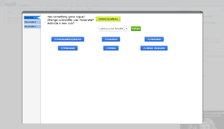
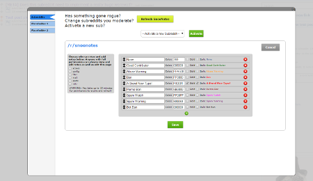

Home of SnooNotes. A mod note addon for Reddit
Currently in Alpha 0.0.9
Features
Highlights
- *NEW!* Share notes with other subreddits using the "Cabal"! See /r/SpamCabal for more details
- Notes are pushed in real time to all other mods using the addon, no need to refresh the page!
- Database storage with change tracking and half hour backups
- Fully customizable note types and granular access controls
- Bare minimum Reddit permissions to use, can enable more for advanced features
- Import existing notes from Moderator Toolbox
- Compatible alongside Toolbox and RES
- Automatic note creation when banning users!
- It's not SkyNet
Fully integrates into Reddit
 Addon gives you all of your usernotes in the exact same way you are already used to in Moderator Toolbox!
Addon gives you all of your usernotes in the exact same way you are already used to in Moderator Toolbox!
Settings dashboard


Full, granular control over access to your subreddit's notes and note types!
Future Updates
These are features that are planned to be implemented some time in future releases. They are roughly ordered in priority / likely order completed.
-
Ability to search user notes
-
Improved "View Note" button / interface
-
Export SnooNotes to Moderator Toolbox
-
Enable notes on submissions instead of users
-
Live "X is responding to this modmail" updates
-
Ask for second opinion of online mods
-
Bot integration
-
Global spam flagging of users?